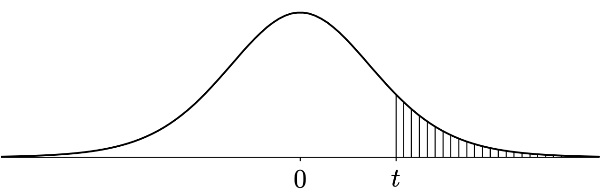

The entries of the \(t\) table give upper quantiles of several \(t\) distributions. The entry in the row for degrees of freedom \(k\) and tail probability \(\alpha\) is equal to \(t_{k,\alpha}\) , which is the value such that \(P(T > t_{k,\alpha}) = \alpha\) , where \(T \sim t_k\) . For example, \(t_{26,0.025} = 2.0555\) .

Code
# t-table <- c (1 : 30 ,40 ,50 ,60 ,120 ,Inf )<- c (0.200 ,0.100 ,0.050 ,0.025 ,0.010 ,0.005 ,0.001 )<- length (df)<- length (a)<- matrix (NA ,ndf,na)for (i in 1 : ndf)for (j in 1 : na){<- round (qt (1 - a[j],df[i]),4 )rownames (tab) <- dfcolnames (tab) <- a
0.2 0.1 0.05 0.025 0.01 0.005 0.001
1 1.3764 3.0777 6.3138 12.7062 31.8205 63.6567 318.3088
2 1.0607 1.8856 2.9200 4.3027 6.9646 9.9248 22.3271
3 0.9785 1.6377 2.3534 3.1824 4.5407 5.8409 10.2145
4 0.9410 1.5332 2.1318 2.7764 3.7469 4.6041 7.1732
5 0.9195 1.4759 2.0150 2.5706 3.3649 4.0321 5.8934
6 0.9057 1.4398 1.9432 2.4469 3.1427 3.7074 5.2076
7 0.8960 1.4149 1.8946 2.3646 2.9980 3.4995 4.7853
8 0.8889 1.3968 1.8595 2.3060 2.8965 3.3554 4.5008
9 0.8834 1.3830 1.8331 2.2622 2.8214 3.2498 4.2968
10 0.8791 1.3722 1.8125 2.2281 2.7638 3.1693 4.1437
11 0.8755 1.3634 1.7959 2.2010 2.7181 3.1058 4.0247
12 0.8726 1.3562 1.7823 2.1788 2.6810 3.0545 3.9296
13 0.8702 1.3502 1.7709 2.1604 2.6503 3.0123 3.8520
14 0.8681 1.3450 1.7613 2.1448 2.6245 2.9768 3.7874
15 0.8662 1.3406 1.7531 2.1314 2.6025 2.9467 3.7328
16 0.8647 1.3368 1.7459 2.1199 2.5835 2.9208 3.6862
17 0.8633 1.3334 1.7396 2.1098 2.5669 2.8982 3.6458
18 0.8620 1.3304 1.7341 2.1009 2.5524 2.8784 3.6105
19 0.8610 1.3277 1.7291 2.0930 2.5395 2.8609 3.5794
20 0.8600 1.3253 1.7247 2.0860 2.5280 2.8453 3.5518
21 0.8591 1.3232 1.7207 2.0796 2.5176 2.8314 3.5272
22 0.8583 1.3212 1.7171 2.0739 2.5083 2.8188 3.5050
23 0.8575 1.3195 1.7139 2.0687 2.4999 2.8073 3.4850
24 0.8569 1.3178 1.7109 2.0639 2.4922 2.7969 3.4668
25 0.8562 1.3163 1.7081 2.0595 2.4851 2.7874 3.4502
26 0.8557 1.3150 1.7056 2.0555 2.4786 2.7787 3.4350
27 0.8551 1.3137 1.7033 2.0518 2.4727 2.7707 3.4210
28 0.8546 1.3125 1.7011 2.0484 2.4671 2.7633 3.4082
29 0.8542 1.3114 1.6991 2.0452 2.4620 2.7564 3.3962
30 0.8538 1.3104 1.6973 2.0423 2.4573 2.7500 3.3852
40 0.8507 1.3031 1.6839 2.0211 2.4233 2.7045 3.3069
50 0.8489 1.2987 1.6759 2.0086 2.4033 2.6778 3.2614
60 0.8477 1.2958 1.6706 2.0003 2.3901 2.6603 3.2317
120 0.8446 1.2886 1.6577 1.9799 2.3578 2.6174 3.1595
Inf 0.8416 1.2816 1.6449 1.9600 2.3263 2.5758 3.0902